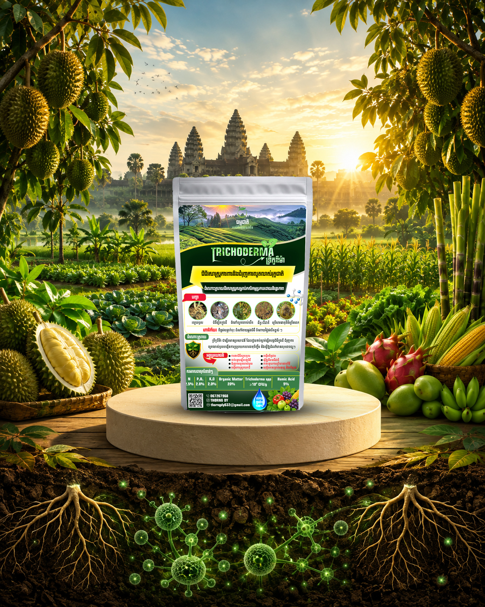
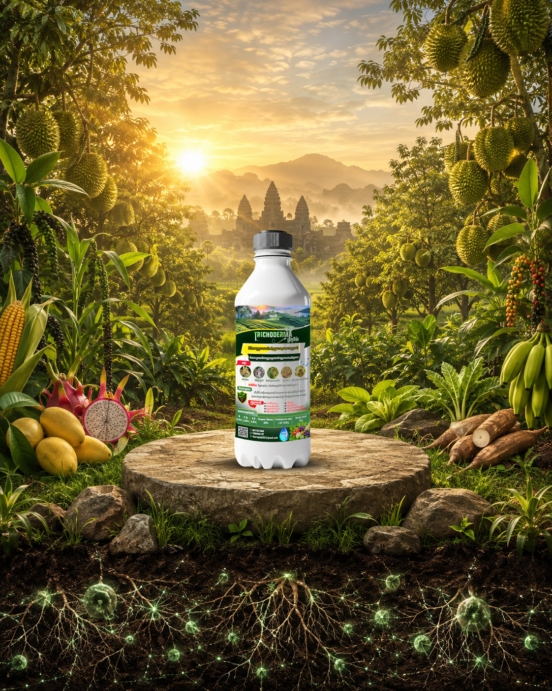
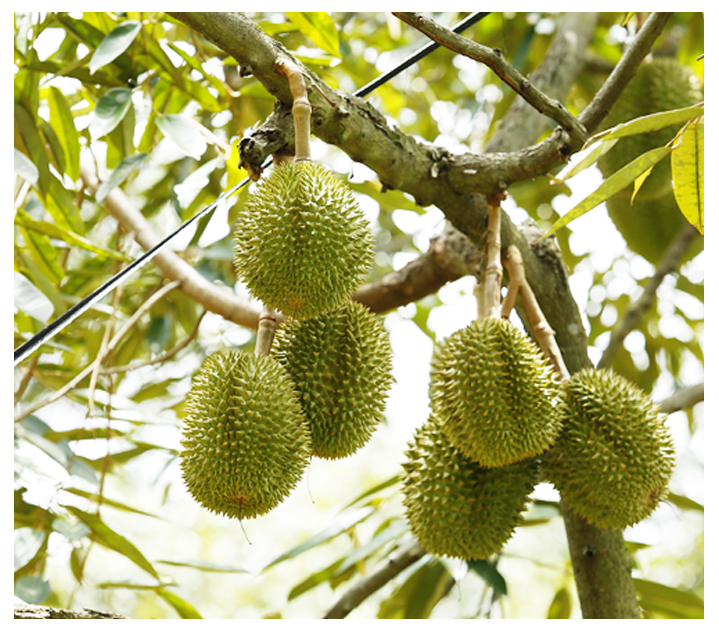
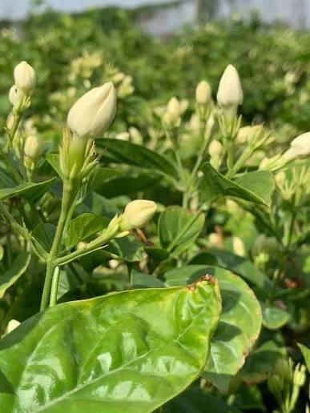
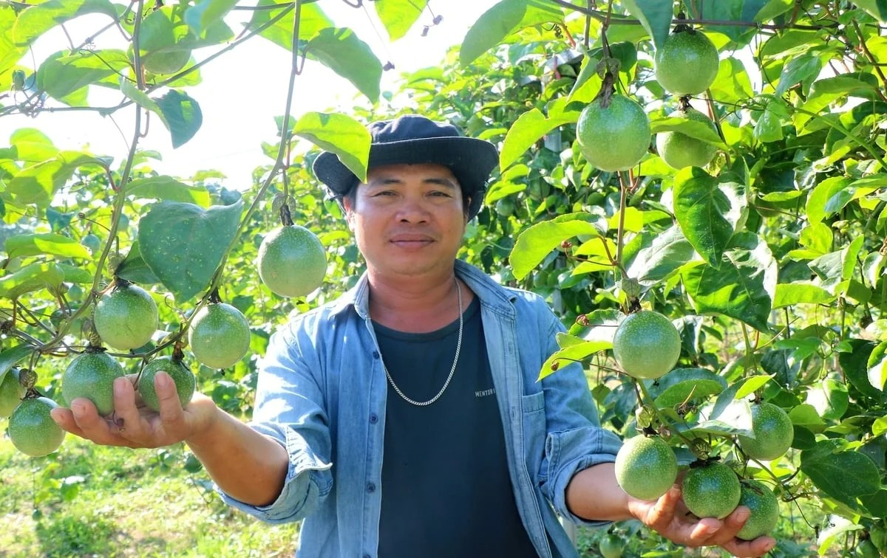
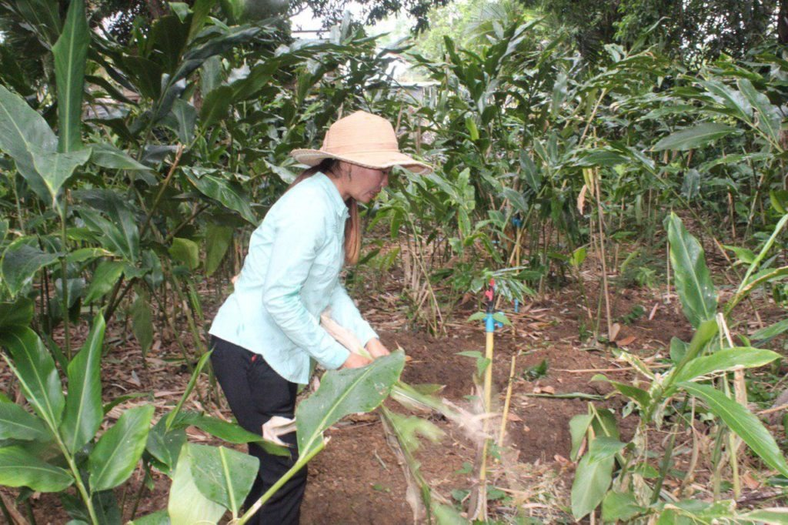
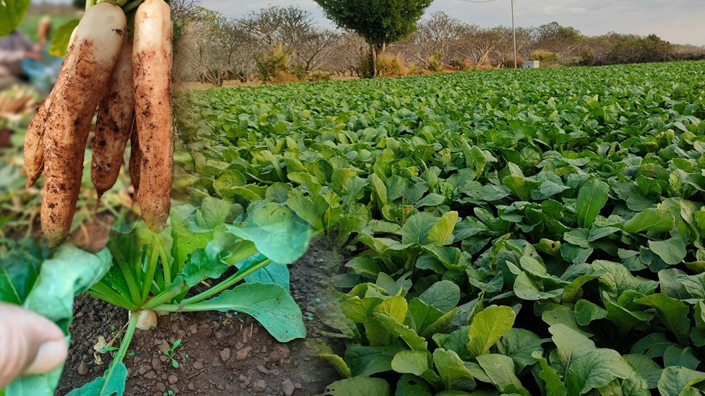

ការពារឫសដំណាំពីជំងឺផ្សិត កែលម្អជីវជាតិដី និងបង្កើនទិន្នផល ដោយប្រើប្រាស់ផ្សិតមានប្រយោជន៍ដែលមានប្រសិទ្ធភាព និងសុវត្ថិភាពចំពោះធម្មជាតិ១០០%។


Trichoderma គឺជាប្រភេទផ្សិតមានប្រយោជន៍ដែលរស់នៅតាមធម្មជាតិក្នុងដី។ វាមានលក្ខណៈពិសេសក្នុងការរស់នៅជាមួយឫសដំណាំ ដោយបង្កើតបណ្តាញការពាររាងសរសៃជុំវិញឫស ទប់ស្កាត់ការឈូសឆាយរបស់ផ្សិតបង្កជំងឺ ក៏ដូចជាជួយបំបែកសារធាតុចិញ្ចឹមក្នុងដីឲ្យរុក្ខជាតិងាយស្រូបយកកាន់តែប្រសើរ។
បញ្ហាទាំងនេះកើតឡើងញឹកញាប់ចំពោះកសិករ ហើយ Trichoderma អាចជួយកាត់បន្ថយ និងទប់ស្កាត់បាន
ឫសដំណាំរលួយខូច ដោយសារជំងឺផ្សិត ធ្វើឲ្យរុក្ខជាតិទទួលទឹក និងជីមិនបានគ្រប់គ្រាន់
ផ្សិតបង្កជំងឺបន្តពូជក្នុងដី ធ្វើឲ្យដំណាំងាយឆ្លងជំងឺម្តងហើយម្តងទៀត
ស្លឹកប្រែពណ៌លឿង ជាសញ្ញាបង្ហាញពីបញ្ហាឫស ឬកង្វះសារធាតុចិញ្ចឹម
រុក្ខជាតិលូតលាស់យឺត ដោយសារប្រព័ន្ធឫសមិនរឹងមាំ និងស្រូបជីមិនបានល្អ
ការប្រើប្រាស់ដីជាប់រយៈពេលយូរ ធ្វើឲ្យខ្សត់ជីជាតិ និងមីក្រូសារពាង្គវត្ថុមានប្រយោជន៍
លទ្ធផលប្រមូលផលមិនសមស្របតាមការវិនិយោគ ដោយសារបញ្ហាដីនិងជំងឺឫស
ដំណោះស្រាយជីវសាស្ត្រពេញលេញ សម្រាប់ដីមានសុខភាពល្អ និងដំណាំរឹងមាំ
ទប់ស្កាត់ និងកាត់បន្ថយការវាយប្រហារពីផ្សិតបង្កជំងឺក្នុងដី
ជួយឲ្យប្រព័ន្ធឫសរីកចម្រើនកាន់តែស្វិតស្វាញ និងជ្រៅ
ធ្វើឲ្យរុក្ខជាតិស្រូបយកជី និងសារធាតុចិញ្ចឹមកាន់តែមានប្រសិទ្ធភាព
ជួយបង្កើនផលិតកម្ម និងគុណភាពនៃដំណាំ
ជំនួសផ្នែកខ្លះនៃថ្នាំគីមី កាត់បន្ថយថ្លៃដើម និងហានិភ័យ
ជីវសាស្ត្រធម្មជាតិ សុវត្ថិភាពដល់មនុស្ស សត្វ និងបរិស្ថាន
អនុវត្តតាមជំហានទាំង៤ខាងក្រោម ដើម្បីទទួលបានប្រសិទ្ធភាពខ្ពស់បំផុតពី Trichoderma
លាយ Trichoderma ជាមួយគ្រាប់ពូជមុនពេលដាំ ដើម្បីការពារពូជពីជំងឺតាំងពីដំបូង
លាយបញ្ចូលជាមួយជីកំប៉ុស ដើម្បីជួយបង្កើនចំនួនផ្សិតមានប្រយោជន៍ក្នុងដី
ជ្រលក់ឫសដំណាំក្នុងសូលុយស្យុង Trichoderma មុនពេលដាំដុះ ដើម្បីបង្កើតបណ្តាញការពារភ្លាមៗ
លាយផ្ទាល់ជាមួយដីជុំវិញឫស ដើម្បីស្តារជីវជាតិដី និងការពាររយៈពេលវែង
ចុចលើរូបភាពដើម្បីមើលពេញអេក្រង់





សូមទាក់ទងមកយើងខ្ញុំសម្រាប់ការកម្មង់ទិញ ឬសាកសួរព័ត៌មានលម្អិតបន្ថែម
តាមដានយើងខ្ញុំ